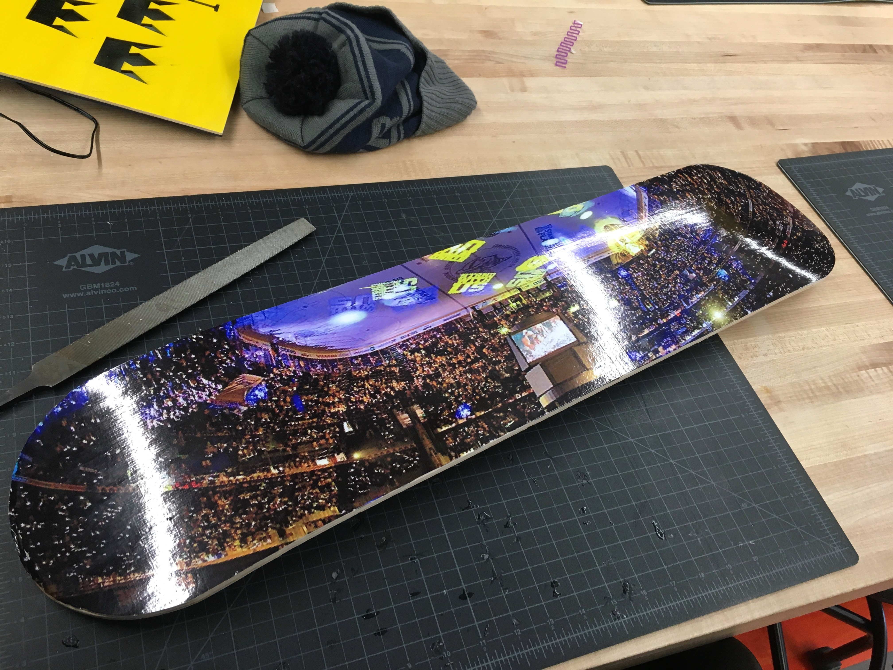

This week we spent our time making our own skateboards! This was a very fun process but also very time consuming. The first thing we had to do in order to make our boards was to get the materials needed. We used about 6-8 different pieces of wood and glue. So first you would lay one piece down then put glue on it then another piece would go on then more glue and you did this until all the pieces were complete.
After that we had to put our boards in a vacuum sealed bag and then seal it shut. The boards were placed on a curved piece of stirofoam and then you took a suction and pumped until their was no room left in the bag. The board would curve over the wood and that would give its curve. next we had a choice to engrave the bottom or design a sticker and i decided to go with a sticker and that was a hockey arena before a playoff game because all the lights and people up i thought it would look cool. After 24 hpurs we took our boards out of the seal and evened the wood out to make the edges the same. We used a saw like machine for the sides to cut away at the extra wood then we used a grinding wheel to make the curves even! Over all i loved this process as it was a very fun week!
